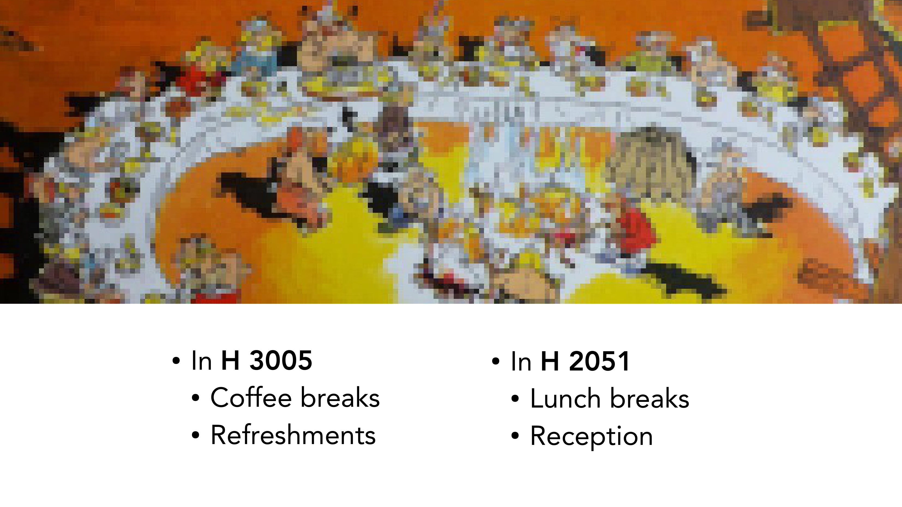
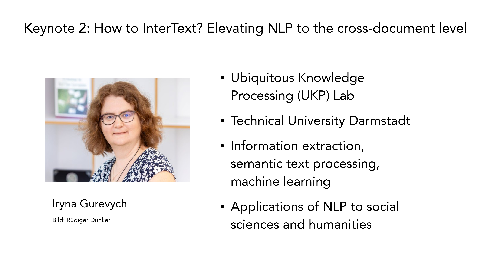

2 Large Language Models for the History, Philosophy and Sociology of Science
Overview
This report systematically documents the factual content presented at the ‘Large Language Models for the History, Philosophy and Sociology of Science’ workshop, convened from 2nd to 4th April 2025, both physically at TU Berlin, Room H3005, and virtually. This collaborative endeavour garnered considerable interest, attracting over 50 paper submissions and accommodating 220 registered participants, alongside a substantial online audience. Iryna Gurevych, Pierluigi Cassotti, and Nina Tahmasebi delivered the keynote addresses. Arno Simons, Michael Zichert, Gerd Graßhoff, and Adrian Wüthrich organised the event, which received support from the ERC Consolidator Grant Nr. 101044932, under the Network Epistemology in Practice (NEPI) project. The workshop primarily focused on applying network and semantic analysis, particularly leveraging Large Language Models, to explore complex issues within the history, philosophy, and sociology of science. Julia Kim, Svenja Goetz, Lea Stengel, and Oliver Ziegler (Unicam) provided instrumental assistance, ensuring its successful execution. Further information remains accessible via the dedicated URL: https://www.tu.berlin/hpss-mod-sci/workshop-llms-for-hpss.
2.1 Workshop Engagement and Recording Protocols
Adrian Wüthrich, a workshop organiser, commenced the proceedings by warmly welcoming all participants. He highlighted the considerable interest generated by the call for papers and registration, which yielded over 50 submissions. From these, the organisers meticulously selected 16 papers for presentation. A substantial online audience also convened, complementing the in-person attendees. Crucially, the workshop sessions are undergoing recording, a detail previously communicated through the registration form. The technical setup for this recording comprises a single camera, precisely aimed at the presenter, alongside four microphones and an iPhone serving as a backup audio recorder. Subject to presenters’ explicit consent, the videos of the talks, encompassing subsequent discussions, will be uploaded to NEPI’s dedicated YouTube Channel following the workshop. Participants requiring further information or wishing to withhold their consent should contact the organisers directly.
2.2 Deliberation Protocols and the Workshop’s Inception

The workshop swiftly reached its full capacity for in-person attendees, whilst simultaneously attracting a substantial online audience, culminating in approximately 220 registered participants. The organisers aimed to ensure comprehensive inclusion for all individuals interested in the topics discussed throughout the two-and-a-half-day programme. The workshop’s genesis stemmed from two principal initiatives:
Firstly, within the NEPI project, Arno Simons pioneered the training of a large language model on physics texts, whilst Michael Zichert employed similar models to analyse conceptual issues within physics.
Secondly, Gerd Graßhoff, a long-standing collaborator, consistently advocated for applying artificial intelligence in the history and philosophy of science, particularly for dissecting scientific discovery processes.
These converging interests culminated in a collaborative effort: the present workshop, which receives funding from the ERC Grant Network Epistemology in Practice (NEPI). Within this project, the researchers meticulously study the internal communication dynamics of the ATLAS collaboration at CERN, the renowned particle physics laboratory. They seek to elucidate how such extensive research collaborations collectively generate novel knowledge. This investigation employs both network analysis, to map communication structures, and semantic tools, including Large Language Models, to trace the flow of ideas.
The organisers extended their gratitude to Svenja Götz, Lea Stengel, and Julia Kim for their invaluable administrative and organisational contributions. They also thanked Oliver Ziegler and his Unicam team for their technical expertise in recording keynotes, setting up sessions, and facilitating a seamless Zoom experience. For discussion, participants are requested to formulate concise questions. The organisers will collect these in sets of four before the presenter offers collective replies. Both the Zoom chat and an Etherpad (or Cryptpad) are available for submitting questions and comments.
2.3 Logistical Provisions and Recording Protocols

The organisers issued a crucial reminder regarding the ongoing recording of sessions, noting that participants had consented to this during registration. The recording setup includes a camera directed towards the speaker, four microphones, and an iPhone serving as a backup audio recorder. Subject to presenter approval, the videos of the talks, encompassing the discussion segments, will be uploaded to the workshop’s YouTube channel. Notably, during discussions, the system will capture only the presenter’s audio and video, excluding the audience. Participants are encouraged to contact the organisers for further details or should they wish to withdraw their consent.
Beyond the formal sessions, the workshop actively fosters networking amongst researchers. Ample lunch and coffee breaks are scheduled, complemented by a modest reception. The workshop dinner, however, offers regrettably limited seating, accessible only to pre-approved participants. Coffee breaks and refreshments are hosted in H 3005, whilst lunch breaks and the reception take place in H 2051, located down the hall, past the final stairs of the building, and one floor below.
2.4 Keynote 1: Large-Scale Text Analysis for Societal Change
Given the substantial group size and the constrained time for presentations and comments, participants are requested to keep their questions concise and pertinent. Following each presentation, the organisers will collect approximately four questions and comments, enabling the presenter to respond collectively and thereby optimising time. Whilst acknowledging the likely abundance of valuable questions, the format anticipates that not every participant will have the opportunity to speak in person. To facilitate broader engagement, an Etherpad or Cryptpad is available for posting comments and questions after sessions, enabling presenters to review and respond at their convenience. During sessions, both online and in-person attendees can utilise the Zoom chat for real-time interaction.
Beyond the formal programme, the workshop actively cultivates informal networking opportunities, providing ample lunch and coffee breaks alongside a modest reception. The first keynote, titled ‘Large-scale text analysis for the study of cultural and societal change’, featured Pierluigi Cassotti and Nina Tahmasebi from the University of Gothenburg. Their presentation delved into critical topics such as ‘Change is Key!’, semantic change detection, the development of benchmarks, and the broader application of data science within the humanities.
2.5 Keynote 2: Elevating NLP to Cross-Document Analysis

The workshop featured a second keynote address delivered by Iryna Gurevych, scheduled for the late afternoon of the following day. Professor Gurevych leads the Ubiquitous Knowledge Processing (UKP) Lab at the Technical University Darmstadt. Her presentation, titled ‘How to InterText? Elevating NLP to the cross-document level’, explored her extensive research in information extraction, semantic text processing, and machine learning. Crucially, her work also encompassed the practical applications of Natural Language Processing within the social sciences and humanities, aligning perfectly with the workshop’s interdisciplinary focus.
2.6 Interactive Platforms and Keynote Presentations
A final logistical clarification concerned the workshop dinner, which was exclusively for participants who had received prior confirmation. Coffee breaks and refreshments were hosted in H 3005, whilst lunch and the reception took place in H 2051, located at the far end of the hall, down the final set of stairs, and one floor below.
The organisers then formally introduced the keynote speakers. Pierluigi Cassotti and Nina Tahmasebi, both from the University of Gothenburg, delivered the first keynote. Nina Tahmasebi serves as the Principal Investigator for the ‘Change is Key’ research programme in Gothenburg, with Pierluigi Cassotti contributing as a researcher to this project. Their collective work is highly regarded for its advancements in semantic change detection, encompassing both technical aspects, such as the development of robust benchmarks, and broader methodological considerations, including the application of data science methods to complex humanities questions.
The second keynote speaker, Iryna Gurevych, leads the Ubiquitous Knowledge Processing (UKP) Lab at the Technical University Darmstadt. Her extensive research portfolio includes information extraction, semantic text processing, machine learning, and the practical application of Natural Language Processing to challenges within the social sciences and humanities. To facilitate ongoing engagement and feedback, an Etherpad or Cryptpad remains available for questions and comments, accessible via a dedicated QR code or directly through the URL: https://cryptpad.fr/pad/#/2/pad/edit/t+PRLu1hGK6o9ICpwWizkER3/.